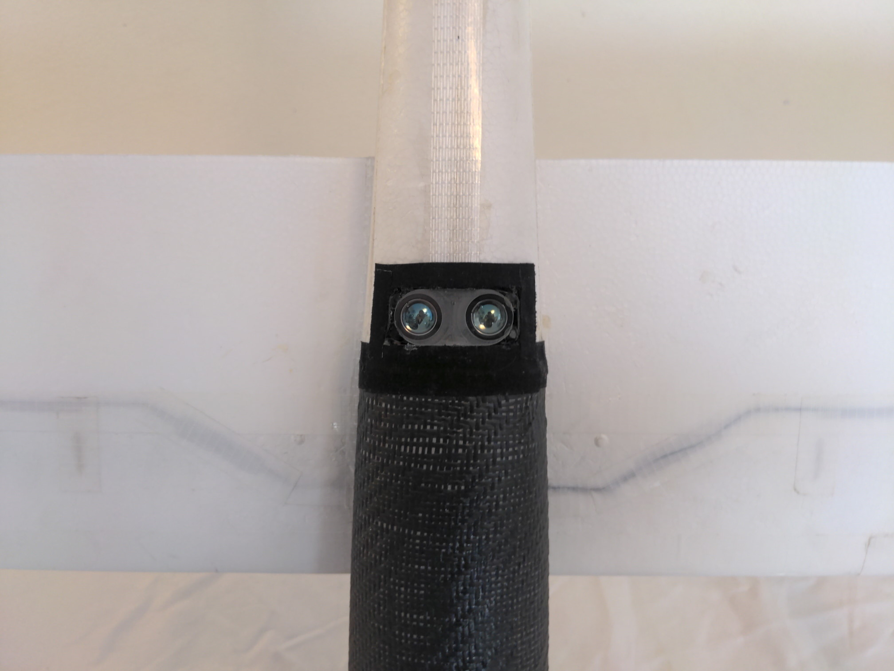

The UAV glider was born from the desire to fly an RC airplane while sat at home in front of a computer, just like in a flight simulator, but with a real airplane, flying wherever one could want. I'm aware that operating the glider like that is pretty illegal. I built it to be theoretically able to do so and always kept line of sight when flying ;)
To acieve this goal the glider has many sensors on board. The main flight computer is a RaspberryPi running a modified PX4 autopilot trough a Navio2 hat. It communicates with my computer via 4G LTE, or the RC receiver and 433Mhz telemetry module as fallback. When connected over the internet it can stream a live video of what it sees directly on my screen! Additionally the glider has a GNSS module for location, a laser range finder for PX4's autoland function, a pitot tube to know the airspeed, and an angle of attack/slip sensor from my bachelor thesis, because why not. This project was also the first time I tried myself at carbon-fiber lamination.
